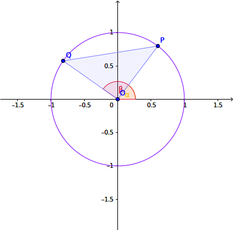

Section 5.4 加法定理
¶Subsection 5.4.1 加法定理
¶三角関数の和や積に対して成り立つ関係式は、いずれも次の加法定理が基本となって示される。
定理 5.27. 加法定理.
\(\alpha, \beta \in \mathbb{R}\)とする。
\begin{align*}
\sin(\alpha \pm \beta) &= \sin\alpha\cos\beta \pm \cos\alpha\sin\beta (\text{複号同順})\\
\cos(\alpha \pm \beta) &= \cos\alpha\cos\beta \mp \sin\alpha\sin\beta (\text{複号同順})\\
\tan(\alpha \pm \beta) &= \frac{\tan\alpha \pm \tan\beta}{1 \mp \tan\alpha\tan\beta} (\text{複号同順})
\end{align*}
証明.
\begin{align*}
PQ^2 &= |\cos\beta - \cos\alpha|^2 + |\sin\alpha - \sin\beta|^2 = (\cos^2\beta + \sin^2\beta) + (\cos^2\alpha + \sin^2\alpha) - 2(\cos\alpha\cos\beta + \sin\alpha\sin\beta)\\
&= 1 + 1 - 2(\cos\alpha\cos\beta + \sin\alpha\sin\beta) = 2 - 2(\cos\alpha\cos\beta + \sin\alpha\sin\beta)
\end{align*}
なので、\(\cos(\alpha - \beta) = \cos\alpha\cos\beta + \sin\alpha\sin\beta\)が成り立つ。ここで\(\beta = -\phi\)とおくと、
\begin{gather*}
\cos(\alpha + \phi) = \cos\alpha\cos(-\phi) + \sin\alpha\sin(-\phi) = \cos\alpha\cos\phi - \sin\alpha\sin\phi
\end{gather*}

\begin{align*}
\sin(\alpha \pm \beta)
&= \cos(\frac{\pi}{2} - (\alpha \pm \beta)) = \cos((\frac{\pi}{2} - \alpha) \mp \beta))
= \cos(\frac{\pi}{2} - \alpha)\cos\beta \pm \sin(\frac{\pi}{2} - \alpha)\sin\beta\\
&= \sin\alpha\cos\beta \pm \cos\alpha\sin\beta
\end{align*}
最後に、\(\tan\)の加法定理を示す。
\begin{gather*}
\tan(\alpha \pm \beta)
= \frac{\sin(\alpha \pm \beta)}{\sin(\alpha \pm \beta)} = \frac{\sin\alpha\cos\beta \pm \cos\alpha\sin\beta}{\cos\alpha\cos\beta \mp \sin\alpha\sin\beta}
= \frac{\frac{\sin\alpha}{\cos\alpha} \pm \frac{\sin\beta}{\cos\beta}}{1 \mp \frac{\sin\alpha\sin\beta}{\cos\alpha\cos\beta}}
= \frac{\tan\alpha \pm \tan\beta}{1 \mp \tan\alpha\tan\beta}
\end{gather*}
加法定理は便利な定理だが、\(\sin,\cos,\tan\)のそれぞれにプラスとマイナスの場合があり覚えにくい。 語呂合わせで覚える方法の1つに、\(\sin\)の加法定理は「サイン・コス・コス・サイン」、\(\cos\)の加法定理は「コス・コス・マイナス・サイン・サイン」、\(\tan\)の加法定理は「1引くタン・タン、タン足すタン」というものがある。 これを覚えておき、マイナスの場合の式が必要な場合は、プラスの場合の式に出てくるプラス・マイナスをひっくり返すようにすれば、覚える量が少なくて済む。
加法定理を使うと、有名な角度以外の角度でも、三角関数の値を求められることがある。
例 5.29. 加法定理.
\begin{gather*}
\sin \frac{\pi}{12} = \sin(\frac{\pi}{4} - \frac{\pi}{6}) = \sin\frac{\pi}{4} \cos\frac{\pi}{6} - \cos\frac{\pi}{4} \sin\frac{\pi}{6} = \frac{1}{\sqrt{2}}\frac{\sqrt{3}}{2} - \frac{1}{\sqrt{2}}\frac{1}{2} = \frac{\sqrt{3} - 1}{2\sqrt{2}} = \frac{\sqrt{6} - \sqrt{2}}{4}
\end{gather*}
Subsection 5.4.2 倍角・半角の公式
¶加法定理から、三角関数に関する多くの公式が示される。 以下の公式は数も多いので、式自体を覚えるのではなく、式の導出方法を覚えておくとよい。
定理 5.30. 二倍角の公式.
\(\alpha \in \mathbb{R}\)とする。
\begin{align*}
\sin 2\alpha &= 2\sin\alpha\cos\alpha\\
\cos 2\alpha &= \cos^2\alpha - \sin^2\alpha = 2\cos^2\alpha - 1 = 1 - 2\sin^2\alpha
\end{align*}
証明.
\begin{align*}
\sin 2\alpha &= \sin(\alpha + \alpha) = \sin\alpha\cos\alpha + \cos\alpha\sin\alpha = 2\sin\alpha\cos\alpha\\
\cos 2\alpha &= \cos(\alpha + \alpha) = \cos\alpha\cos\alpha - \sin\alpha\sin\alpha = \cos^2\alpha - \sin^2\alpha\\
&= \cos^2\alpha - (1 - \cos^2\alpha) = 2\cos^2\alpha - 1\\
&= 2(1 - \sin^2\alpha) - 1 = 1 - 2\sin^2\alpha
\end{align*}
定理 5.31. 半角の公式.
\(\alpha \in \mathbb{R}\)とする。
\begin{gather*}
\sin^2 \alpha = \frac{1 - \cos2\alpha}{2}, \cos^2\alpha = \frac{1 + \cos2\alpha}{2}
\end{gather*}
証明.
\begin{align*}
1 - \cos2\alpha &= 1 - (1 - 2\sin^2\alpha) = 2\sin^2\alpha\\
1 + \cos2\alpha &= 1 + (2\cos^2\alpha - 1) = 2\cos^2\alpha
\end{align*}
定理 5.32. 三倍角の公式.
\(\alpha \in \mathbb{R}\)とする。
\begin{gather*}
\sin 3\alpha = 3\sin\alpha - 4\sin^3\alpha, \cos 3\alpha = 4\cos^3\alpha - 3\cos\alpha
\end{gather*}
証明.
\begin{align*}
\sin 3\alpha &= \sin(2\alpha + \alpha) = \sin2\alpha\cos\alpha + \cos2\alpha\sin\alpha = 2\sin\alpha\cos^2\alpha + \cos^2\alpha\sin\alpha - \sin^3\alpha\\
&= 3\sin\alpha\cos^2\alpha - \sin^3\alpha = 3\sin\alpha(1 - \sin^2\alpha) - \sin^3\alpha = 3\sin\alpha - 4\sin^3\alpha\\
\cos 3\alpha &= \cos(2\alpha + \alpha) = \cos2\alpha\cos\alpha - \sin2\alpha\sin\alpha = (\cos^2\alpha - \sin^2\alpha)\cos\alpha - 2\sin^2\alpha\cos\alpha\\
&= \cos^3\alpha -3\sin^2\alpha\cos\alpha = \cos^3\alpha - 3(1 - \cos^2\alpha)\cos\alpha = 4\cos^3\alpha - 3\cos\alpha
\end{align*}
Subsection 5.4.3 和積・積和公式
¶加法定理を用いると、三角関数の積と三角関数の和を相互に変換する公式を導ける。
定理 5.33. 積和公式.
\(\alpha, \beta \in \mathbb{R}\)とする。
\begin{align*}
\sin\alpha\cos\beta &= \frac{1}{2}(\sin(\alpha + \beta) + \sin(\alpha - \beta))\\
\cos\alpha\sin\beta &= \frac{1}{2}(\sin(\alpha + \beta) - \sin(\alpha - \beta))\\
\cos\alpha\cos\beta &= \frac{1}{2}(\cos(\alpha + \beta) + \cos(\alpha - \beta))\\
\sin\alpha\sin\beta &= -\frac{1}{2}(\cos(\alpha + \beta) - \cos(\alpha - \beta))
\end{align*}
証明.
\begin{align*}
\sin(\alpha + \beta) &= \sin\alpha\cos\beta + \cos\alpha\sin\beta\\
\sin(\alpha - \beta) &= \sin\alpha\cos\beta - \cos\alpha\sin\beta
\end{align*}
この2式の両辺を足し合わせて、\(\sin(\alpha + \beta) + \sin(\alpha - \beta) = 2\sin\alpha\cos\beta\)となる。 また、2式の両辺の差をとって、\(\sin(\alpha + \beta) - \sin(\alpha - \beta) = 2\cos\alpha\sin\beta\)となる。 他の2式も、同様にして導かれる。定理 5.34. 和積公式.
\(x, y \in \mathbb{R}\)とする。
\begin{align*}
\sin x + \sin y &= 2\sin\frac{x+y}{2}\cos\frac{x-y}{2}\\
\sin x - \sin y &= 2\cos\frac{x+y}{2}\sin\frac{x-y}{2}\\
\cos x + \cos y &= 2\cos\frac{x+y}{2}\cos\frac{x-y}{2}\\
\cos x - \cos y &= -2\sin\frac{x+y}{2}\sin\frac{x-y}{2}
\end{align*}
証明.
Subsection 5.4.4 三角関数の合成
¶加法定理を逆向きに用いると、複数の三角関数を一つにまとめることができる。
定理 5.35. 三角関数の合成.
\(a, b, \theta \in \mathbb{R}\)とする。
\begin{align*}
a\sin\theta + b\cos\theta &= \sqrt{a^2 + b^2}\sin(\theta + \phi) (\cos\phi = \frac{a}{\sqrt{a^2 + b^2}}, \sin\phi = \frac{b}{\sqrt{a^2 + b^2}})\\
&= \sqrt{a^2 + b^2}\cos(\theta + \psi) (\sin\psi = \frac{a}{\sqrt{a^2 + b^2}}, \cos\psi = \frac{b}{\sqrt{a^2 + b^2}})
\end{align*}
証明.
三角関数の合成を行うことで、三角関数の最大・最小問題が解き易くなることがある。
例 5.36. 三角関数の合成.
\begin{gather*}
\sin\theta + \sqrt{3}\cos\theta = 2\sin(\theta + \phi) (\cos\phi = \frac{1}{2}, \sin\phi = \frac{\sqrt{3}}{2}) = 2\sin(\theta + \frac{\pi}{3})
\end{gather*}
と変形できる。\(\frac{\pi}{3} \leq \theta + \frac{\pi}{3} \leq \frac{4}{3}\pi\)であるので、\(\theta + \frac{\pi}{3} = \frac{\pi}{2}\)で最大、\(\theta + \frac{\pi}{3} = \frac{4}{3}\pi\)で最小となる。 従って、\(\theta = \frac{\pi}{6}\)で最大値2をとり、\(\theta = \pi\)で最小値\(-\sqrt{3}\)をとる。